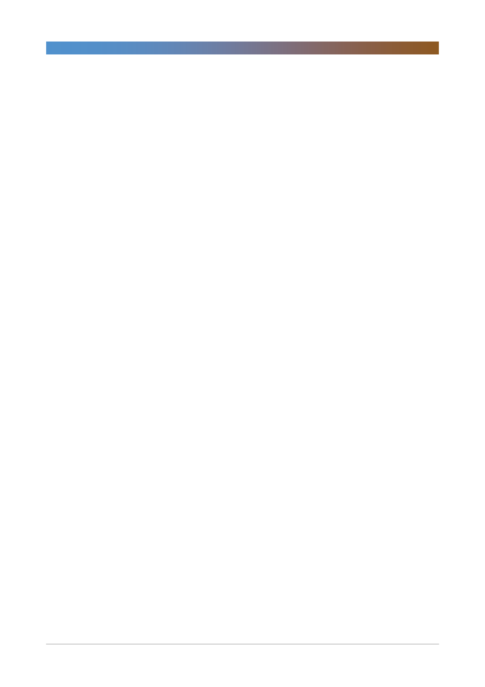

아모레퍼시픽(090430)
기업개요 및 용어해설
아모레퍼시픽은 1945년에 설립되어 40여 년간 부동의 국내 1위의 화장품 업체이다. 대표적인 브랜드는 한방화장품 설화
수로 2009년 단일 화장품 브랜드 최초로 백화점 경로 매출 1천억원 달성, 2015년 1조원을 돌파했다. 아모레퍼시픽은 중
국에서 가장 성공한 한국 화장품 진출 업체로 2015년 중국 시장 내 점유율은 1.9%이다.
3